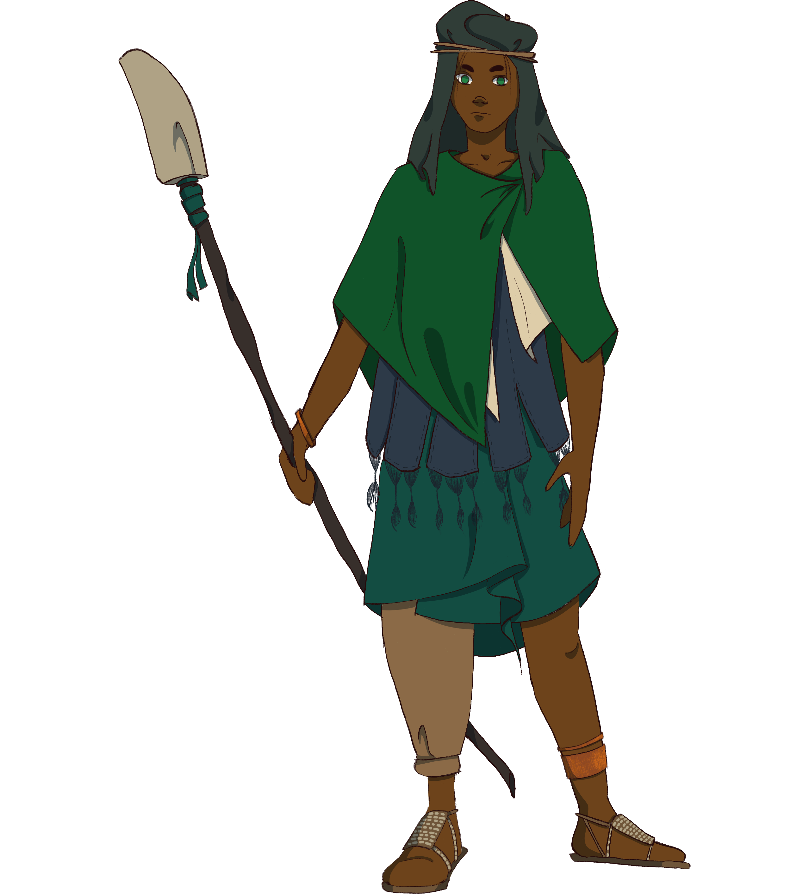
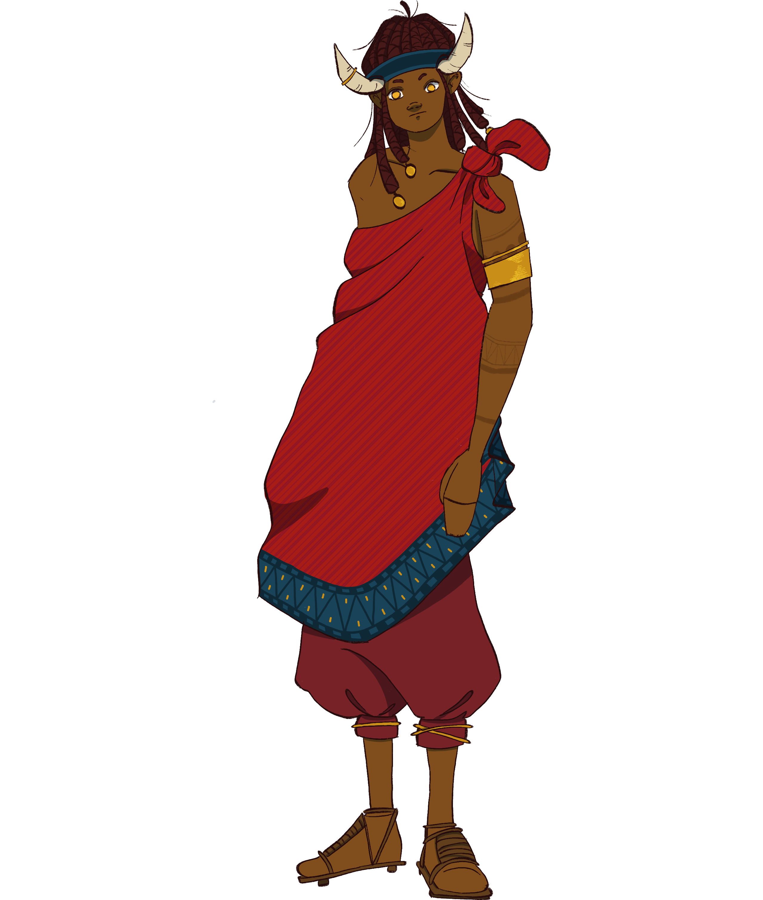
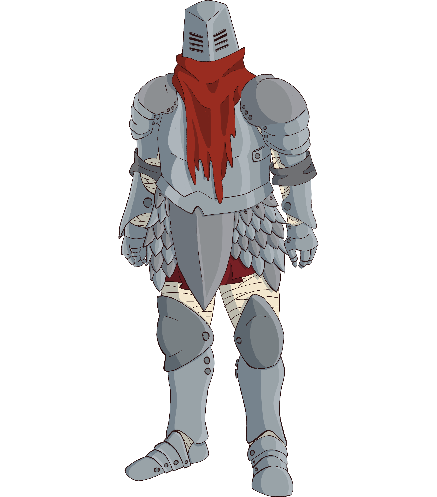

Humes
The god-tree Et created humes to aid it's fight against Om during the War of Autumn. Over time, many humes grew opposed to this conflict, and fled the company of their god-tree, for which they were cursed with monochromacy. These people came to be known as the ird, which roughly translates to "one who runs" in jantherlin, and their dispersion around the world as the Ird Diaspora. Those that remained were blessed with Color, and are known as the gat, meaning "one who stays" in the old language.
Physical description
Humes are of a broad spectrum. Before the Penance, they traveled the entirety of Yuadrem, and are as varied as the environments they settled. Their height frequently ranges from slightly more than a meter to about 2, and can weigh anything from 40 to 120 kilograms, on average. Hume skin shades to any color from the darkest brown to the lightest hues. They can grow long hair from their scalps and faces, with great variety of color and thickness.
While this varies from culture to culture, in general a hume is considered an adult between 14 and 16 years, with life expectancy averaging at 25 years due to high child mortality. For humes who reach 25, they have a reasonable chance of living up to 50 or 60 years. Hume sorcerers are well known for extending their lifespan, and is usual for them to live even more than a century.
Most humes are a gendered kin, and mostly have one child at a time. The burden of caring for children varies across cultures: for gats, communal childcare is the norm, where everyone in the community or "bulu" will care for those who can't care for themselves, while in most ird cultures it is often left to those considered "weak" by their communities.
Gat culture
Distinctive characteristics
The typical gat skin is dark, ranging from yellow, through brown, to black. While some gats are blonde, the most common hair colors are brown, black, with some shades of red. It is a common gat custom to sport long hair and beards, both often decorated with jewelry.
Gats are somewhat short people, ranging from 140 to 170 centimeters on average. A common feature among gats is their vibrant eyes: thanks to the Blessing of Color, they are of very strong colors, and most of them can change this color at will.
Origins and history
The first gats were borne as the fruits of Et, and were marked with horns to signify their divine ascendance. Known as the Et-born, they are usually the most vigorous among gats, and are impervious to aging and to wounds that would be deadly to most. They are extremely rare in the current day, and the few that remain were born before the Schism.
While most Et-born are sterile, a peculiar one was different. The illuminant Rerisi could produce offspring, and she did so in abundance—she created the treb, or "one who dies" in jantherlin. The treb are larger and bulkier than the average gat, and were often the first line of attack during the War of Autumn. Even as children of an Et-born, the treb were regarded as brutish, such that they didn't fit the civilization built by the other gats. In the third century, they were exiled by the god-suzerain Olag, and most established a new home in the Dead Sea and in the Sylvan Canyon.
After the Schism, the gats that remained around the charred corpse of Et became known as the noves, or the "one who stays" in jantherlin. The noves are the most common ethnicity in the modern world, and are often considered simile to civilization. They built the holy city of Naptane inside the stump of Et, from which sprung the Seven Princedoms of the Sea.
The bughna, or "one who leaves", endured the 40-Year Famine by adopting a nomadic lifestyle, one which defines them still. These humes became known as great pastors and merchants, and strengthened the bonds between the princedoms, helping in the establishment of the large gat civilization. Even today they are often associated to good luck.
Clothing
Clothes are varied across the different gat cultures, but one thing remains constant: a person's garments generally focuses on a few particular, strong colors. Blessed by Color, gats are particularly affected by the hue of their clothing, and they take advantage of this to manipulate their mind, personality, and physiology.
While working, a laborer might wear red with hints of magenta to allow their body to enhance their physical strength. A scholar may wear blue with details in cyan and chartreuse to improve their memory retention. Travelers often wear green in the day to speed up their travels, then orange or saffron during the night to receive more warmth from their bonfire.
|  |
|---|
| Gat shepherd from the Saefel Canyon. Blessed by Color, they wear green and blue clothes to aid their speed and help maintain body temperature. They carry a makeshift bone polearm, which doubles as a walking stick. |
Traditions and religion
Families and guilds. To the noves, a family is defined as the group of people with whom one shares housing. Most members of a family share a profession, and large families are known as guilds. The head of a family is usually either its oldest member or someone designated by vote.
In most gat cultures, a child becomes a member of their mother's family when they're born, and their care becomes a communal endeavor. When they reach adulthood—usually around year 14—a gat can choose to join another family, as long as they're accepted by this family's head. The departure is often accompanied by a ceremonial feast shared by the two families.
Death. Across gat cultures, the dead are said to protect their families after their death, and old tradition dictates to bury the dead below the family house, usually under doors and windows. Lying below their loved ones strengthens the dead as they take on the role of a protector.
After the Penance, a new tradition that's quickly become commonplace is to burn some of the dead at the center of towns and villages. This helps to stave off nix, as the charred bones release their pheter. While in general the specific manner a body is disposed of is chosen by the family, burning bodies is often mandatory when nix is on high tide.
Religion. Tanethism is the standard faith in Yuadrem, and has been so since the early third century, albeit in a less organized manner than today's. While some dedicate their life to a particular god, it has no clergy or authorities—Tanethism is a fully personal religion. Altars to certain gods are common both in cities and in the wild, as small statues and temples are scattered all across Yuadrem.
Apart from providing the list and description of the religion's gods, the Book of Taneth details the myriad of rituals to each of them. Most gats have a predilection toward certain gods, and include small rituals to them into daily life, as liturgy is attached to any activity one deems important. Perhaps due to their unique connection to the divine, the treb are particularly religious, and the number and complexity of their rituals exceeding those of the other kins.
Bughna moon rituals. The bughna have a special admiration towards Kegal, the indigo moon, and the nomadic patterns of animal herders are aligned to this moon's phases. The search for new grazing grounds only occurs while the fundamental signature of lightning is in phase, as the gats feel protected by the signature's gaze. They also celebrate thunderstorms as portents of the god, sometimes engaging in dangerous rituals seeking her favor.
Aversion to piercing. One thing in common for all gats is their aversion to penetration wounds, especially so after the Penance. Punctures are believed to cause a leakage of the pheter trapped inside the body, such that not only the victim's body is damaged, but their soul is as well.
Names
By old tradition, gats have various names, which don't have a particular order and may change during a person's lifetime. In addition, different people and communities will often know a person by different names. Names are not made official, and the duty of recording individuals is left to each family.
While the intricacies of these names are unique to each community—and sometimes a particular family—five categories are common:
- A personal name is the name given to a gat my their mother, usually soon after birth. People usually keep this personal name thorough life, but nothing stops them from changing it.
- A parent name is the name of a gat's parent followed by the suffix ban/van, which means "sibling of" in avshenese. Additional parent names can be added after the first one, climbing up a branch of the family tree. A person may prefer to use one or more of these names if they have a particularly known ancestor.
- A profession name is simply the name of the profession practiced by the gat.
- A family name is gained by all members of a family or guild upon being born into or joining it. Sometimes, the head of the family will add the grit suffix to this family name, which translates to "head" in avshenese.
- A locality name which reflects the origin of the gat. The she prefix is added to it, which is a phoneme associated to location in avshenese. These names are usually only used by travelers, and depend on the extensions of these travels—a gat coming from a different town may be referred to by the name of that town, while one from another kingdom or sumi will acquire its name.
Personal names are often easy to pronounce. A non-exhaustive list of common ones is: Adrevik, Agik, Ak, Ani, Anux, Aren, Avag, Baen, Bevan, Dzurar, Gauren, Gevaug, Grigur, Guxar, Kadzak, Kevun, Marim, Narek, Pagran, Puguse, Rauben, Sivadre, Sona, Xarig, Xuvep.
|  |
|---|
| Gat noble from the Holy Princedom of Ushpavam. His red clothes serve to fortify him, while the gold he wards evokes virtue. His horns, made from boar husks, conjure an association to the god-suzerain Olag and the Et-born in general. |
Ird culture
Distinctive characteristics
Irds are usually easy to recognize due to their size, which on average is about 175 centimeters. Their skin color varies considerably, but they are generally paler than gats. Their irises are dimmer than those of their counterpart, with shades of brown being the most frequent.
Irds are often separated into three distinct ethnicities—kulbaba, dral, and thulk. While the former two are rather slender when compared to gats, the latter are generally tall and broad. Hair color can also be used to differentiate irds: the kulbaba often have dark brown hair; the dral lighter shades of brown or even crimson hues, which tends to gray at an earlier age than that of other humes; while the thulk often have either blond, black, or ginger hair.
Origins and history
The first humes to renounce the War of Autumn and abandon Et were the irds. Persecuted by the god-tree followers, they fled from the Horned Shores, and far away from the grasp of Et in what's known as the Ird Diaspora. While many ethnicities came from this event, the ones that remain commonplace after the Penance are three—the thulk, the kulbaba, and the dral, ordered by the number of members from each.
The thulk migrated to the northernmost regions of Yuadrem, establishing the old kingdom of Krudzal around the polar region. Here, they were the first to work iron, with which they built imposing sailing ships known as "ironhulls". Krudzal tamed the seas with these vessels, spreading the thulk to territories such as the Elderberry Wilds, from which the settlers of Gronselar arrived.
The kulbaba were the second to emigrate, and settled on the tropical islands of the Qul Archipelago. On it, they separated into a myriad of chiefdoms, claiming the islands and many of the nearby territories. While they never achieved full cooperation between chiefs, they became known as the Jenkash Empire due to their constant expansion. Most of the kulbaba arrived in the Fesh Peninsula along with the elves in the Landing of Drejek, while most of the Dentralin Chiefdom immigrated earlier among the bughna, establishing temples in the Sumi of Fremit and the Saefel Canyon.
The dral were the last to leave the grasp of Et. They migrated to the desert of Zoedrem and the Dratl'fal Savanna, also separating into chiefdoms. Not many of them remain, but some did enter the peninsula by immigrating among the bughna.
Clothing
Irds were said to have been cursed with feathers when they fled the War of Autumn. While they don't actually grow feathers, a common feature in ird attire is the usage of plumage in their clothing. They would wear many colors before the Penance, but now colorful feathers are usually only used in traditional rituals, as most fear the effect the colors may have on them bodies.
The thulk, who settled in cold climates, used to wear vermilion fabrics with complex patterns above many layers of fur. Nowadays, while their attires are lighter, they keep this color despite the change in environment. The dral, used to the desert of Zoedrem, wore simple cyan and mint clothing to cool them down and give them speed. The kulbaba in contrast often kept the colorful patterns from their old traditions, recently adapted to fibers instead than feathers.
 |
|---|
| Ird hunter from Gronselar, wearing a traditional poncho. Her sword and shin guards made of bronze attest to the exceptional metalworking achieved by her people. |
Traditions and religion
Constant Competitions. Competitions are commonplace to irds, and frequently are the preferred way to settle disagreements. They are consummated as public as possible, and are often encouraged and celebrated by others. These matches can involve anything the participants deem necessary. If they are expected to lead to physical injury or death, the chief or family head is to be informed beforehand, and they must either bear witness or anoint someone to do so. Dral competitions are particularly ferocious, and they often involve violence or outright combat.
Promise of Allegiance. As long as both people are willing, anyone can make a public promise of allegiance to another. The person making the vow is called the "First", while the other is the "Second". In this commitment, the First promises to fight and obey any command of the Second. In exchange, the Second must always be fair to the First, and provide home, food, and water to them.
It is common for the whole chiefdom or a large part of it to make a promise of allegiance to the chief. The vow lasts until the death of either person. If a First or Second fails to fulfill their part, they are judged by the local ruler, with a frequent punishment being exile.
Children and Marriage. Before marriage, irds are encouraged to meet and form bonds with others, usually many at a time, until a person becomes pregnant. When this happens, she decides who among her suitors is to be the father. It is not unusual for one to choose many suitors at once, who must complete a set of challenges of the bride's choosing. The champion becomes the groom, while the others are to act as servants during the wedding.
The marriage celebration is generally large, and the whole chiefdom or village is expected to take part in it. As their vows, both members are expected to make a promise of allegiance to the other, such as the one they have with their chiefs.
Adulthood. To become an adult, a child must participate in a competition held in a Day of Change. The particular Days of Change vary across cultures, but all are aligned with the tidal phases of the moons, as seen in the Gronselarian Calendar. Victors in these matches then become adults, while other contestants must wait for subsequent Days of Change. Adulthood is a requirement to make a promise of allegiance—one cannot marry before becoming an adult.
Death and Funerals. Irds believe that a person's soul remains in the body after they die. No funeral is celebrated upon death, and bodies are blindfolded and laid to rest inside a communal crypt. The thulk keep oil urns with the bodies, burning the crypt on the "Day of the Immortal"—the leap day that occurs once every 10 years. The dral kept these crypts open, allowing scavengers to eat the remains and the elements to do the rest. Kulbaba crypts are left near the crown of a banyan tree, allowing elves to rise from the bodies of the dead irds.
Names
While the most common language nowadays is shanise, a language in the avshenesian family, ird naming conventions come from the harualian family. By this custom, each ird has two names: a first name given to them at birth either parent or by the chiefdom's head; and a second name inherited from a parent of their choice, adding the prefix u/ud, which means "child of" in old harualian. Irds tend to admire their parents, and these names are carried with pride.
Ird names are often hard to pronounce by native frisian speakers, and as nicknames are usual in Fesh. Common male names in ird culture include: Aden, Azat, Daneal, Dirkir, Eastean, Goker, Idrahin, Jakod, Jaldor, Jasin, Kuneit, Ludzu, Nuretin, Nutlar, Rezat, Semir, Shasar, Tajik, Tenel, Shasin, Unut.
Then, a few frequent female names are: Aise, Anutshan, Dena, Dilsad, Dorun, Drinja, Eda, Gudlag, Gulden, Hazal, Iris, Katrin, Kisnet, Naina, Nere, Sehil, Selna, Sher, Solveag, Tedzije, Zainesh.
|  |
|---|
| Ird smith from an Ironweaver bulu in Saefel. The Ironweavers are the only people that retain the art of forging iron, and don full iron armor to show their workmanship. |